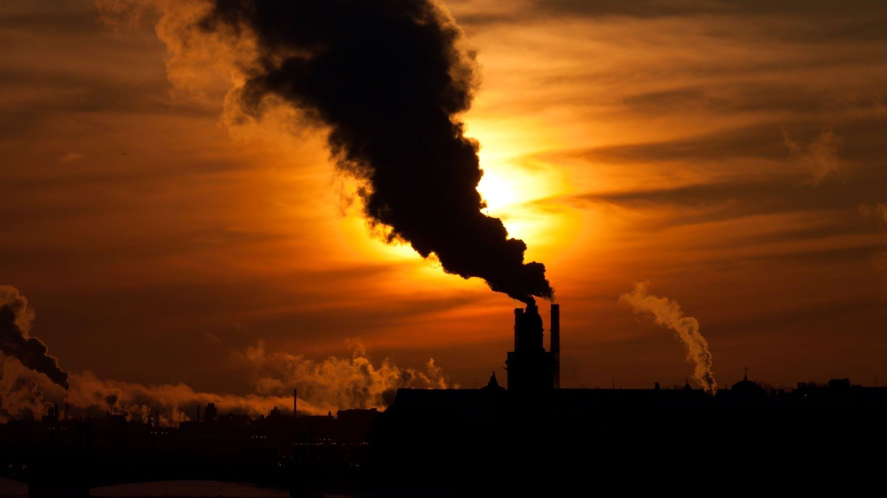
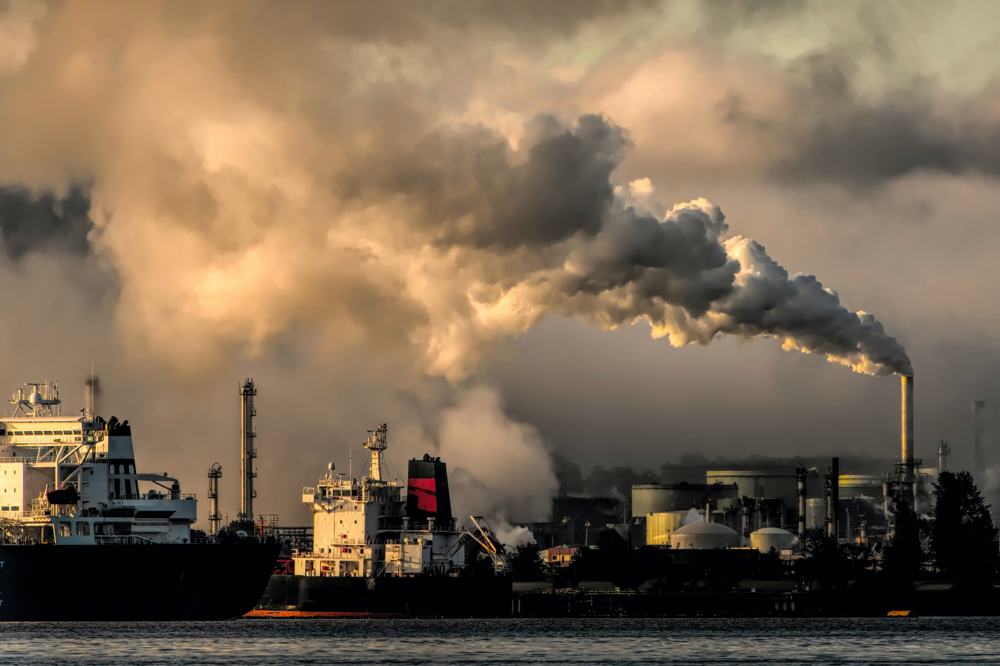

Pollution
Pollution is the leading cause of climate change. It is defined as
the introduction or addition of materials or energy to the environment faster than they can be dispersed or
decomposed. There are three major types of pollution - air, land, and water.

Air
Considered as the most impactful of the three, air pollution severly affects
the biodiversity of life in many ecosystems around the world by contaminating the air with harmful chemical,
physical, or biological agents. Not only that, it also has harmful effects to human life. On average,
air pollution causes the deaths of approximately seven million individuals annually.

Land
Another type of pollution that involves the deposition or
improper disposal of solid and liquid waste on land, which leads to the contamination
of the soil and groundwater. It imposes health risks to human inhabitants near
contaminated areas as the chance of outbreak of vector-borne diseases
and illnesses transmitted by rodents, insects, or other pests and animals are increased.

Water
Water pollution is the release of chemicals, biohazards, wastes,
or other harmful substances, to water or marine environments. It poses a severe risk to
underwater organisms and animals, as it introduces toxic conditions to these life forms.
Furthermore, it also encourages the transmission of water-borne diseases such as cholera
and typhoid fever, which can impact numerous communities.